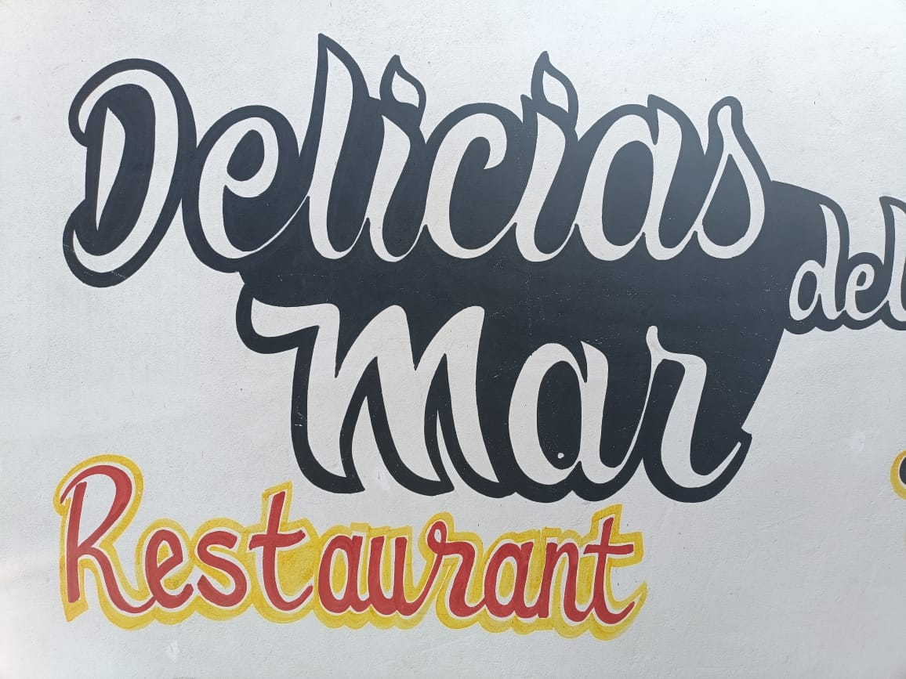
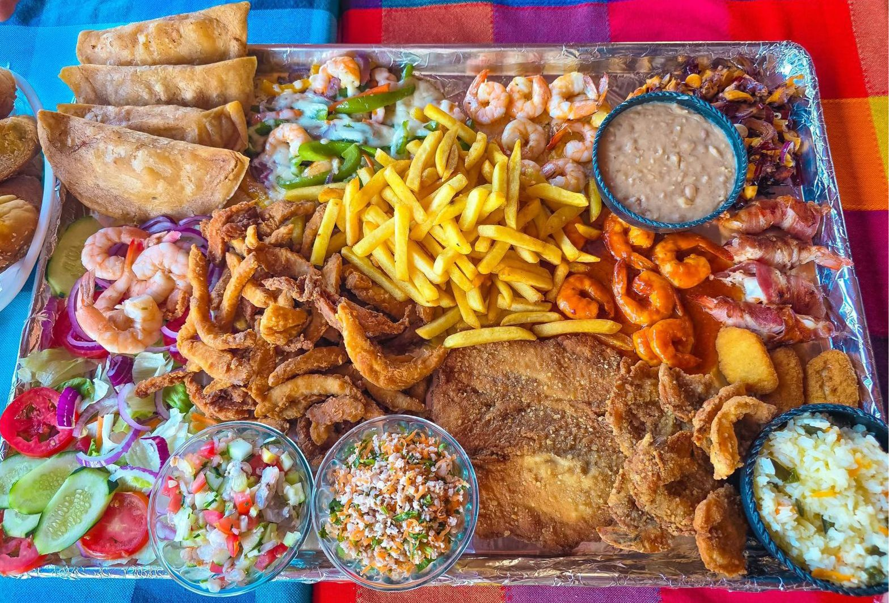

Delicias del Mar
Restaurante frente a la playa especializado en mariscadas, pescado y carne zarandeada.

Restaurante frente a la playa especializado en mariscadas, pescado y carne zarandeada.

Nuestra propuesta destaca por las monumentales Parrilladas King Kong y una frescura inigualable en nuestros célebres aguachiles y ceviches de pescado y camarón. Más que un restaurante, somos una experiencia de hospitalidad única, donde la calidez de ser atendido personalmente por sus propietarios transforma cada visita en un encuentro memorable con el sabor.